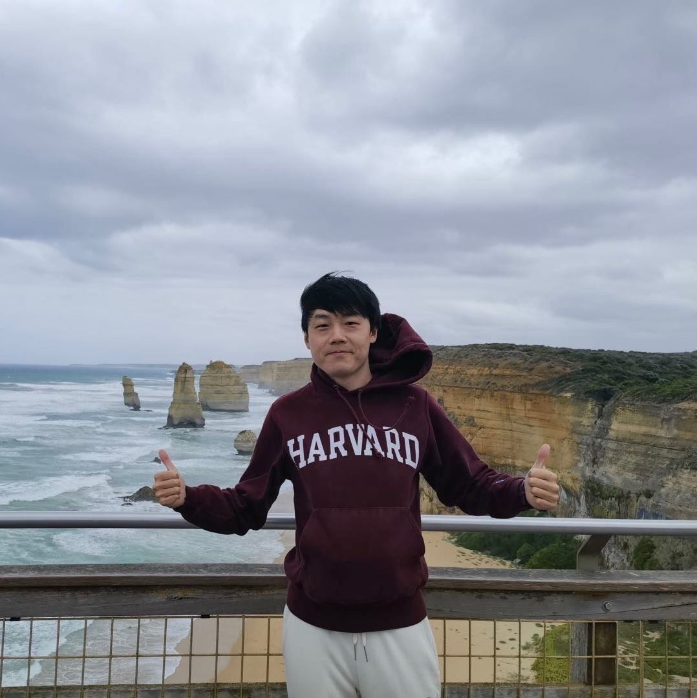

Yu Haibin
Machine Learning Engineer
I am a machine learning engineer at TikTok, where I lead the recommendation algorithms team for user-growth strategies on TikTok Live. Previously, I was at Tencent, building and optimizing large-scale recommendation and advertising systems. I hold a Ph.D. in AI from the National University of Singapore, with research spanning probabilistic machine learning, automated machine learning, recommendation systems and causal inference.
Research Interests
Probabilistic ML
Automated ML
Recommendation
Causal Inference

What's New
Aug 2025
Our paper "Crocodile: Cross Experts Covariance for Disentangled Learning in
Multi-Domain Recommendation" is accepted to CIKM 2025!
May 2025
Invited to serve as a reviewer for ICLR 2025, ICML
2025, and NeurIPS 2025!
Education
Massachusetts Institute of Technology (MIT)
Jan 2017 — Aug 2017Visiting Scholar
National University of Singapore
Aug 2014 — Jan 2020
Ph.D. in Artificial Intelligence, Department of Computer Science
Advisors: Bryan Kian Hsiang Low (NUS) & Patrick Jaillet (MIT)
Supported by Singapore-MIT Alliance for Research and Technology (SMART) Graduate Fellowship
Advisors: Bryan Kian Hsiang Low (NUS) & Patrick Jaillet (MIT)
Supported by Singapore-MIT Alliance for Research and Technology (SMART) Graduate Fellowship
Beihang University
Sep 2010 — Jun 2014B.Eng. in Mechanical Engineering
Publications
* equal contributionCrocodile: Cross Experts Covariance for Disentangled Learning in Multi-Domain Recommendation
CIKM 2025
34th ACM International Conference on Information and Knowledge
Management
Acceptance rate: 29%
Ads Recommendation in a Collapsed and Entangled World
KDD 2024
International Conference on Knowledge Discovery and Data Mining (Applied Data
Science Track)
Acceptance rate: 20%
Genetic Variation and Nonalcoholic Fatty Liver Disease: Field Synopsis, Systematic Meta-Analysis, and Epidemiological Evidence
Journal
Biomedical and Environmental Sciences
Recursive Reasoning-Based Training-Time Adversarial Machine Learning
AIJ
Artificial Intelligence (Special Issue on Risk-Aware Autonomous Systems), Vol.
315
AdaTask: A Task-aware Adaptive Learning Rate Approach to Multi-task Learning
AAAI 2023
37th AAAI Conference on Artificial Intelligence
Acceptance rate: 19.6%
On Provably Robust Meta-Bayesian Optimization
UAI 2022
38th Conference on Uncertainty in Artificial Intelligence
Acceptance rate: 32.3%
Convolutional Normalizing Flows for Deep Gaussian Processes
IJCNN 2021
International Joint Conference of Neural Networks
Acceptance rate: 59.3%
Implicit Posterior Variational Inference for Deep Gaussian Process
NeurIPS 2019
33rd Conference on Neural Information Processing Systems
Acceptance rate: 3% (spotlight) 🌟
Bayesian Optimization Meets Bayesian Optimal Stopping
ICML 2019
36th International Conference of Machine Learning
Acceptance rate: 22.6%
Stochastic Variational Inference for Bayesian Sparse Gaussian Process Regression
IJCNN 2019
International Joint Conference of Neural Networks
Acceptance rate: 52.4%
Awards & Honors
Professional Services
Conference Reviewer
Journal Reviewer